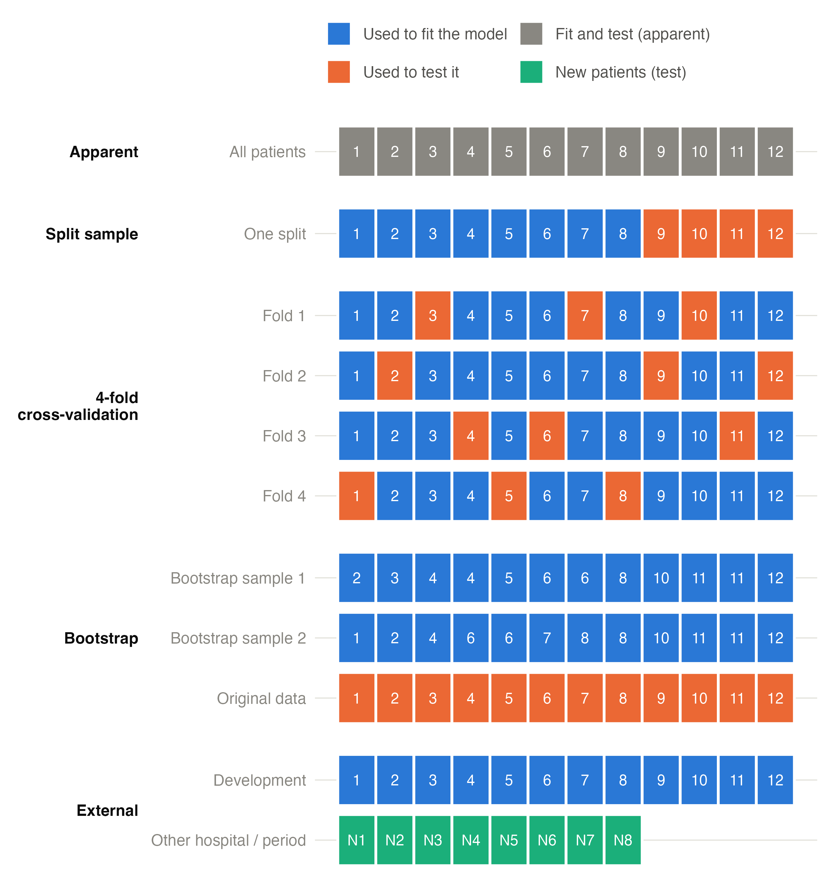
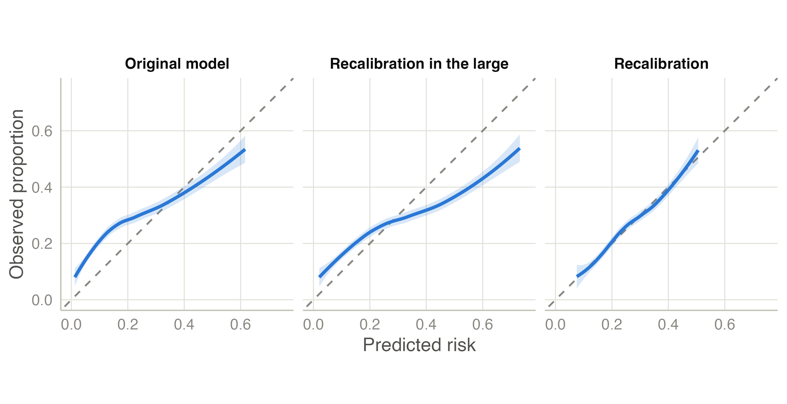
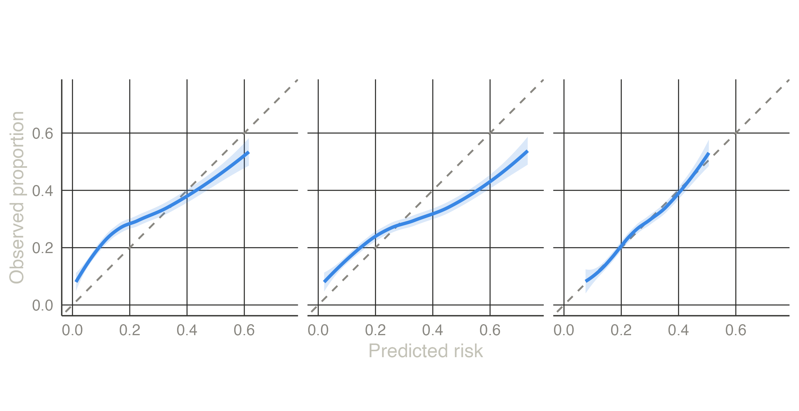

Validation and updating
How cross-validation, the bootstrap and external validation reuse or add patients to measure performance honestly, prediction stability and case-mix, and how a model that does not transport is updated.
Four ways to measure performance
The previous page defined the measures; this one is about which patients they are measured in. A model measured in the patients it was fitted to looks better than it is (apparent performance, see overfitting). The designs differ in how they find patients the model has not seen. In the figure, each square is a patient of a small development data set of 12.
- Apparent: fit and test on the same 12 patients. Optimistic: the model has already seen the answers.
- Split sample: fit on 8, test on the other 4. Honest but wasteful — the model is built on two thirds of the data and tested on a handful — and the result depends on which patients happened to land in the test part. Not recommended (Steyerberg 2019).
- Cross-validation: split into k folds (here 4); fit on 3 folds and predict the fourth, four times, so that every patient is predicted exactly once by a model that did not see them. Repeating with new random splits (repeated cross-validation) averages out the luck of the split.
- Bootstrap: draw 12 patients with replacement from the 12 — some appear twice or three times, others not at all (sample 1 misses patients 1, 7, 9). Fit on the bootstrap sample, and measure the performance twice: in the bootstrap sample (where it is optimistic, as apparent performance is) and in the original 12. The difference is the optimism of that model. Repeated 200 times and averaged, it estimates how optimistic the real model is; subtracting it from the apparent performance gives the optimism-corrected performance (HARRELL et al. 1996).
- External: the model, fitted on all development patients, is applied unchanged to patients from another hospital or a later period (N1–N8), who played no part in building it.
Cross-validation and the bootstrap are internal validation: they estimate performance in new patients from the same population. Only external validation tests whether the model works elsewhere.
The bootstrap, step by step
flowchart LR A["Development data<br/>(n patients)"] --> B["Fit the model<br/>apparent performance"] A --> C["Draw a bootstrap sample<br/>(n patients, with replacement)"] C --> D["Repeat the whole procedure<br/>(selection, tuning, fit)"] D --> E["Performance in the<br/>bootstrap sample"] D --> F["Performance in the<br/>original data"] E --> G["Optimism = E − F"] F --> G G --> H["Average over 200 samples<br/>corrected = apparent − optimism"] B --> H
The key is the box Repeat the whole procedure: everything that was done to build the model — variable selection, choice of interactions, the elastic net’s λ — is repeated in every bootstrap sample, so its optimism is included. clinpred does this automatically: the fitting procedure is a single function, used for the final model and for every resampled fit (and for every fold of cross-validation).
Two by-products come free:
- the uniform shrinkage factor, the mean calibration slope of the bootstrap models in the original data (how much the coefficients should be shrunk), next to van Houwelingen’s heuristic estimate;
- prediction stability (Riley and Collins 2023): each bootstrap model predicts every patient, so the spread of a patient’s predicted risk across models (the instability plot, the mean absolute prediction error, MAPE) shows how much an individual prediction depends on the particular data.
The bootstrap is preferred for small and moderate data sets (it uses all patients to fit); repeated cross-validation behaves similarly when data are large. clinpred stratifies the folds by the outcome.
External validation and case-mix
clinpred applies the development model, unchanged (the same coefficients and, for Cox models, the same baseline hazard), to
- the rows marked by a validation split variable in the same data set (a later recruitment period — temporal validation; another centre — geographical), and/or
- an external data file (csv, tsv, txt, omv, xlsx, sav). Its columns are matched by name (ignoring case), its factor levels to the development levels, and a check table reports what could not be matched or lies beyond the development range.
Whether performance holds or drops must be interpreted against the case-mix of the new population (Debray et al. 2015). clinpred’s case-mix table compares the predictors, the spread of the linear predictor (a wider spread raises discrimination by itself) and a membership c-statistic: how well a model can tell development from validation patients. Near 0.5 the validation tests reproducibility (same kind of patients); high values test transportability to a different population. For Cox models see also Royston and Altman (2013).
Updating a model that does not transport
A model rarely fails completely in a new population. More often it still ranks patients well but its risks are off: the new population has a different baseline risk (another country, period or referral pattern), or the predictors carry less weight there. The model does not need to be rebuilt: it can be updated with a few parameters estimated in the new data (Steyerberg 2019; Houwelingen 2000). Writing LP for the original model’s linear predictor (its log-odds), the methods are:
| Method | Updated model | Re-estimated | Parameters |
|---|---|---|---|
| Original model | logit(risk) = LP | nothing | 0 |
| Recalibration in the large | logit(risk) = a + LP | the intercept: the overall risk level | 1 |
| Recalibration | logit(risk) = a + b × LP | intercept and slope: level and spread | 2 |
| Model revision | every coefficient refitted | all | all |
For Cox models, a re-estimates the baseline risk at the horizon instead of an intercept.
The figure shows a simulated example: a model developed in one population, validated in another with a higher event rate and weaker effects.


- Original: O/E = 1.44 — 44% more events than predicted — and a calibration slope of 0.52.
- Recalibration in the large shifts every log-odds by a = 0.53: the average risk is now right (O/E = 1.00), but low risks are still too low and high risks too high.
- Recalibration also multiplies the log-odds by b = 0.52, shrinking them toward the average: the curve now follows the diagonal.
Updating changes the risks, not the ranking: the AUC is the same for the first three methods, because adding a constant or multiplying by a positive number does not reorder patients. Only revision, which re-weights the predictors, can change it.
Choosing the method: the closed testing procedure
More parameters always fit the new data better, so the simplest method that is good enough should be chosen. For logistic and linear models clinpred uses the closed testing procedure of Vergouwe et al. (2017). Each method is compared with revision (the most flexible) by a likelihood ratio test (F test for linear models), starting from the simplest:
flowchart TD
A{"Original model<br/>significantly worse than revision?"} -- no --> O["Keep the original model"]
A -- yes --> B{"Recalibration in the large<br/>significantly worse than revision?"}
B -- no --> C["Recalibration in the large"]
B -- yes --> D{"Recalibration<br/>significantly worse than revision?"}
D -- no --> R["Recalibration"]
D -- yes --> V["Model revision"]
The procedure protects against updating on noise. The price is power: when revision has many parameters, a one-parameter shift is diluted among them and may not be detected (the external validation example shows a case). Look at the O/E ratio and its confidence interval as well, and decide with clinical judgement.
For Cox models the partial likelihood does not involve the baseline hazard, so a change of the baseline risk cannot be tested against revision the same way. clinpred uses sequential tests from the most complex method down: revision against recalibration (partial likelihood ratio), slope = 1 (partial likelihood ratio), and observed/expected risk at the horizon = 1 (a Wald test of log O/E); the most complex method whose test is significant is chosen.
Updated models are evaluated in the same data that updated them, so their performance is optimistic — most of all for revision. An updated model should itself be validated before use.
References
Debray, Thomas P. A., Yvonne Vergouwe, Hendrik Koffijberg, Daan Nieboer, Ewout W. Steyerberg, and Karel G. M. Moons. 2015. “A New Framework to Enhance the Interpretation of External Validation Studies of Clinical Prediction Models.” Journal of Clinical Epidemiology 68 (3): 279–89. https://doi.org/10.1016/j.jclinepi.2014.06.018.
HARRELL, FRANK E., KERRY L. LEE, and DANIEL B. MARK. 1996. “Multivariable Prognostic Models: Issues in Developing Models, Evaluating Assumptions and Adequacy, and Measuring and Reducing Errors.” Statistics in Medicine 15 (4): 361–87. https://doi.org/10.1002/(sici)1097-0258(19960229)15:4<361::aid-sim168>3.0.co;2-4.
Houwelingen, Hans C. van. 2000. “Validation, Calibration, Revision and Combination of Prognostic Survival Models.” Statistics in Medicine 19 (24): 3401–15. https://doi.org/10.1002/1097-0258(20001230)19:24<3401::aid-sim554>3.0.co;2-2.
Riley, Richard D., and Gary S. Collins. 2023. “Stability of Clinical Prediction Models Developed Using Statistical or Machine Learning Methods.” Biometrical Journal 65 (8). https://doi.org/10.1002/bimj.202200302.
Royston, Patrick, and Douglas G Altman. 2013. “External Validation of a Cox Prognostic Model: Principles and Methods.” BMC Medical Research Methodology 13 (1). https://doi.org/10.1186/1471-2288-13-33.
Steyerberg, Ewout W. 2019. Clinical Prediction Models: A Practical Approach to Development, Validation, and Updating. In Statistics for Biology and Health. Springer International Publishing. https://doi.org/10.1007/978-3-030-16399-0.
Vergouwe, Yvonne, Daan Nieboer, Rianne Oostenbrink, et al. 2017. “A Closed Testing Procedure to Select an Appropriate Method for Updating Prediction Models.” Statistics in Medicine 36 (28): 4529–39. https://doi.org/10.1002/sim.7179.